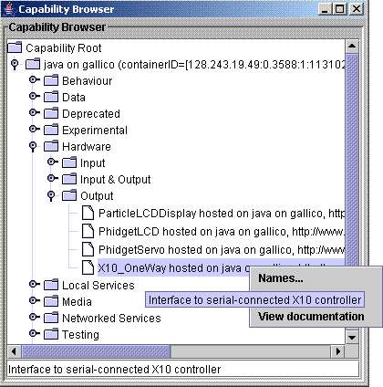

Component documentation guide
Created by Stefan Rennick Egglestone 2005-11-05
Update by Chris Greenhalgh 2005-11-28
Most recent update by Stefan Rennick Egglestone 2006-06-22
Introduction
Component-level documentation
Use of component-level documentation
Property-level documentation
Use of property-level documentation
Methods for specifying documentation
Specifying documentation through javadoc comments
Specifying documentation using a manifest
Although it is not mandatory to provide documentation
for components, the provision of decent documentation is encouraged.
This document explains the different types of documentation that are
available for a component, how they are used by ECT, and how to specify
them. It assumes familiarity with the
Developing new components for ECT
and
Component development reference
documents, which should be read first.
The types of documenation that can be provided for a
component are
All of these types of documentation are used by the
ECT capability browser. Figure 1 below shows a screen shot of this
browser.

Taking the example of the component in the
capability browser labelled
"X10_OneWay hosted on ...":
It should be noted that, whilst html formatting of
a component's short description is optional, html formatting of a
component's long description is mandatory. Currently, long descriptions
must be valid html - eg have opening and closing <html> tags, and
have at least a body section nested within these tags.
To be filled in
To be filled in
There are three methods which can be used to specify
the documentation
described above.
- Documentation can be specified using javadoc comments placed in the
component class file. These comments can be used to auto-generate a
BeanInfo class describing the component.
- A developer can manually develop a BeanInfo class containing
documentation about a
component.
- A developer can provide a manifest file
describing all the components in a bean
Only methods 1 and 3 are described in this document. For details of
method 2,
see the BeanInfo reference or
look at BeanInfos that exist in ECT
Documentation can be specified by the inclusion of
javadoc comments
in component source files. If this is the case, then the target which
builds the component must also use tools provided with ECT to
auto-generate
a BeanInfo class for the component from these comments. See the Component Development Guide
document which decribes how to do this.
Component-level documentation can be specified through the use of a
class-level javadoc comment. For example:
/**
* A short description/summary.
* <H3>Summary</H3>
* A summary
* <H3>Description</H3>
* A longer description
* <H3>Installation</H3>
* An installation
* <H3>Configuration</H3>
* A configuration
* <H3>Usage</H3>
* Some usage
* <H3>Technical Details</H3>
* Some technical details
*
* @displayName component_name
* @classification Tutorials/Writing a Component
* @defaultInputName input
* @defaultOutputName output
*/
In this case, a bean info would be generated whose
- shortDescription is
defined as the characters up to the first full stop
(eg "An example of some javadoc documentation"); this sould be suitable
for use as a tool tip.
- htmlDescription is
defined as being the main section of the comment up to the stand-alone
tags.
- displayName and classification attribute are
defined using ect-defined javadoc tags @displayName and @classification
Note that you can also specify the following using JavaDoc tags if you
are using the standard BeanInfo auto-generation:
- @preferred -
JavaBean standard thing, not really used at present in ECT
- @expert - JavaBean
standard thing, not really used at present in ECT
- @defaultInputProperty PNAME
- define the default input, e.g. for use in the the display editor
- @defaultOutputProperty PNAME
- define the default output, e.g. for use in the display editor
A basic manifest entry for a component, which
contains
the minimum amount of information necessary to define the component,
looks like the following:
Name: equip/ect/components/phidgets/PhidgetInterfaceKit.class
Java-Bean: True
A short description and a category can be specified
in manifest entry by adding extra lines to the entry:
Name: equip/ect/components/phidgets/PhidgetInterfaceKit.class
Java-Bean: True
classification: Hardware/Input & Output
shortDescription: put text of short description here
There are several methods of specifying a long
description in the
manifest. An additional line can be added specifying the description
within the manifest (as for bean info method, long description must be
valid html):
Name: equip/ect/components/phidgets/PhidgetInterfaceKit.class
Java-Bean: True
classification: Hardware/Input & Output
shortDescription: put text of short description here
htmlDescription: <html><body>body of long description</body></html>
Alternatively, the name of a file which has been
added anywhere in the same jar as the component can be specified:
Name: equip/ect/components/phidgets/PhidgetInterfaceKit.class
Java-Bean: True
classification: Hardware/Input & Output
shortDescription: put text of short description here
htmlFile: name_of_file.html
Finally, if neither manifest attributes
htmlDesription or htmlFile are specified, then
the jar will be searched for an html file with the same name as
the class to which the manifest entry refers. So, if a manifest entry
is for class PhidgetInterfaceKit, then the jar will be searched for a
file called PhidgetInterfaceKit.html. This searching
process can slow
down the startup of the container hosting this particular component,
so if a developer does not intend to supply a long description, the
manifest attribute
nohtml: some random text
can be specified. Note that the exact text after the
: character does not matter - but some text must be there, otherwise
java will
complain that the manifest is not formatted correctly!